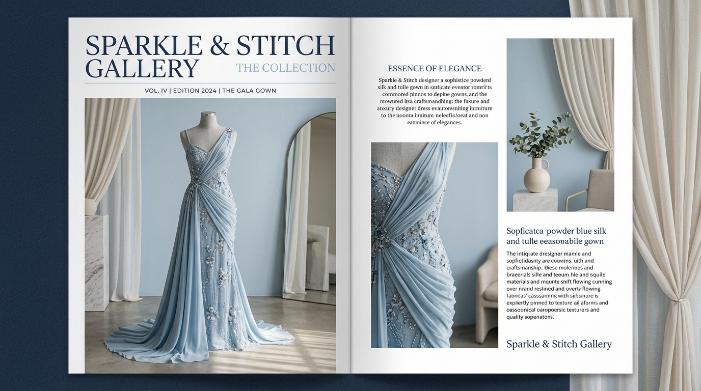

2026 // CASE 01
Fashion / Designer Wear
•
Social Media Direction & Video Production
Sparkle & Stitch Gallery
Elevating an independent couture boutique with cinematic product reels, seasonal lookbook curation, and audience growth across Instagram and Meta ads. Achieved a 3.8× return on ad spend (ROAS) and sustained reach across regional fashion shoppers.